Eng. de Software e Produção | Dados, Qualidade e Automação | Scrum Master
📍 Atualmente: Grupo Adriano Cobuccio
Engenheiro com experiência em Projetos, Melhoria Contínua e Automação nas áreas de PCP, PCM e Operações.
Transformar dados e processos em valor com inovação, inteligência e impacto real.
🌱 Um Projeto em Evolução, Baseado na Prática
Essa aplicação é o reflexo de um processo de aprendizado contínuo — tanto na área industrial quanto na de desenvolvimento de software. Não é uma solução definitiva, mas sim uma tentativa real de facilitar a rotina de quem, como eu, já sentiu na pele as dificuldades do chão de fábrica.
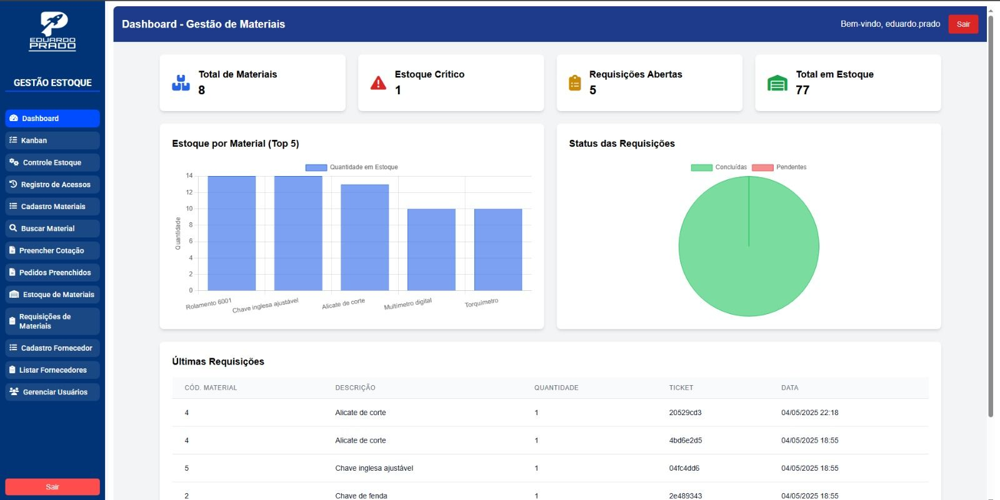 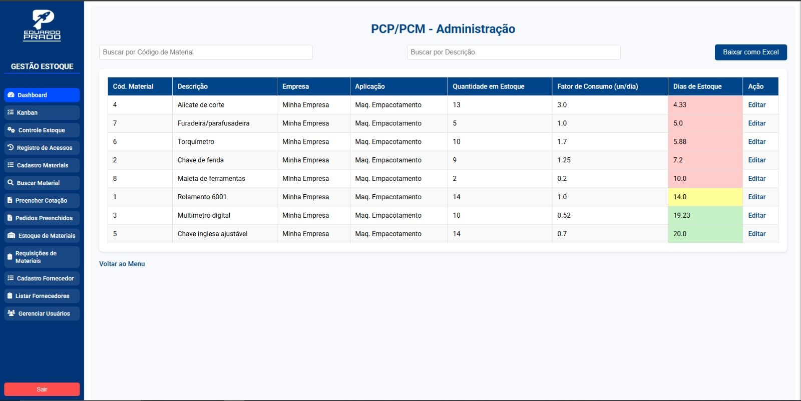 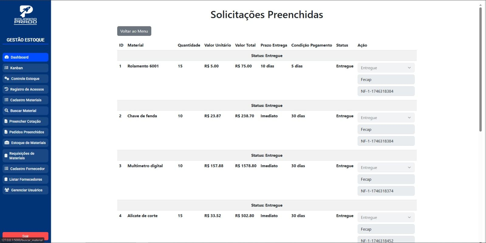 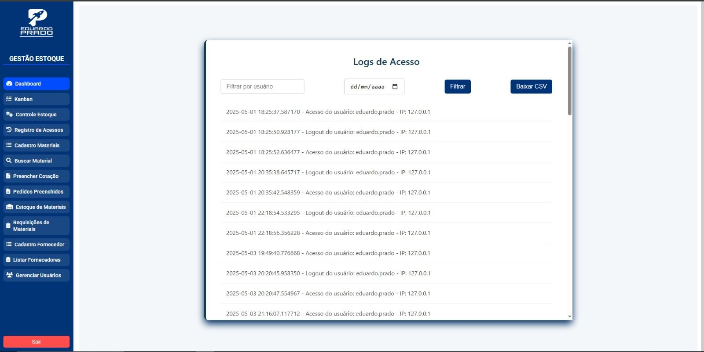 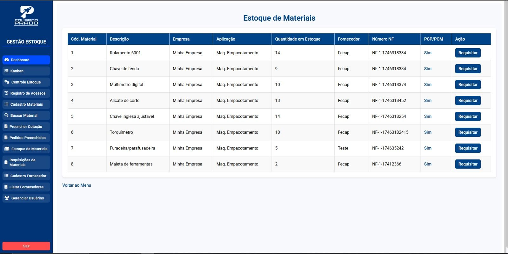 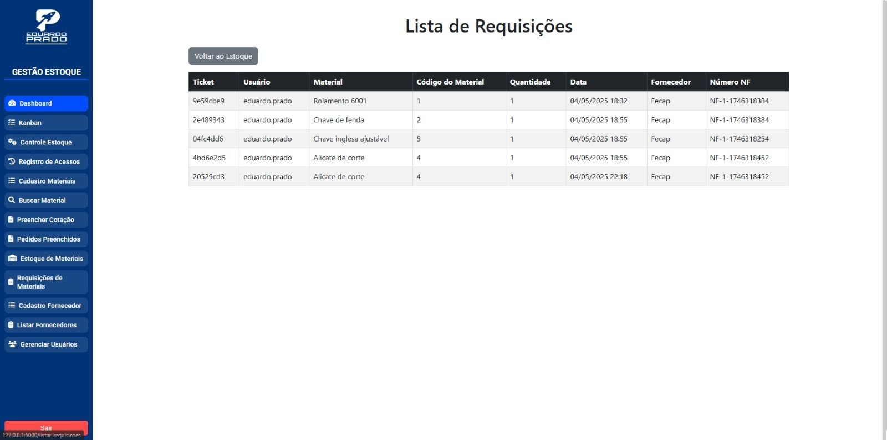Este é um sistema de compras que desenvolvi baseado em uma demanda de um cliente em crescimento. Ele é projetado para ser intuitivo e fácil de usar, com foco na experiência do usuário.
Vou continuar aprimorando e aprendendo. Se você tiver algum feedback ou sugestões, adoraria ouvir!
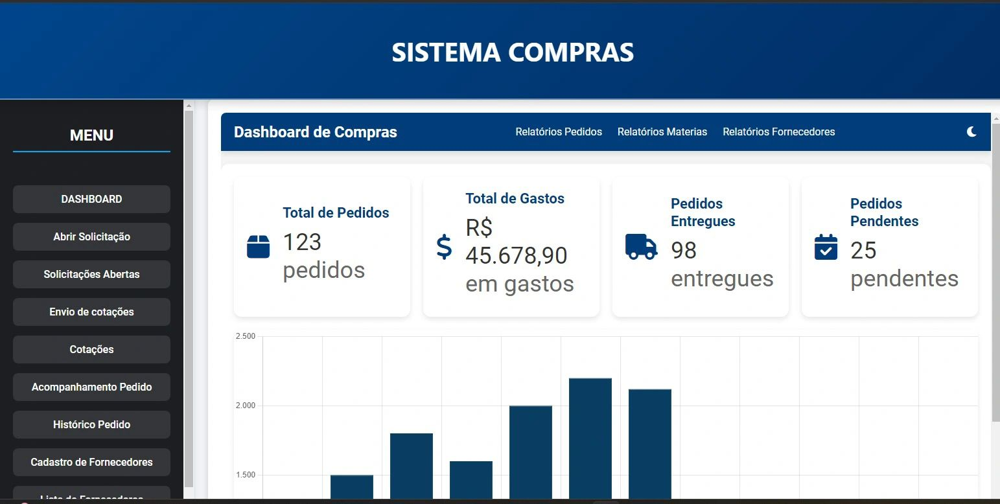Este projeto que desenvolvi consiste em um sistema de controle de indicadores para 16 setores da organização. O site foi criado com o objetivo de otimizar a gestão e o monitoramento dos principais KPIs, oferecendo uma visão clara e prática do desempenho em tempo real.
Acredito que a integração entre engenharia de produção e tecnologia da informação é essencial para impulsionar a eficiência operacional e elevar a qualidade em qualquer empresa.
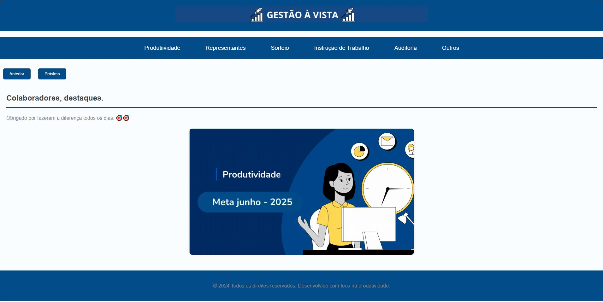 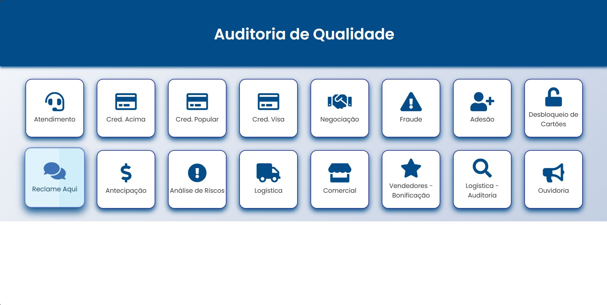Este projeto tem como objetivo apoiar o trabalho dos representantes comerciais durante visitas a lojistas. Por meio de um formulário digital, os representantes registram as visitas com captura automática da geolocalização, garantindo mais transparência e rastreabilidade no processo.
📊 Relatórios Automatizados: Também foi implementada uma funcionalidade que gera relatórios automaticamente, calculando os valores a receber com base nas visitas realizadas. Isso reduz o trabalho manual e garante maior precisão nos dados.
✅ Resultados: O sistema já está em operação, validando as visitas em campo e contribuindo significativamente para a otimização da gestão da equipe comercial.
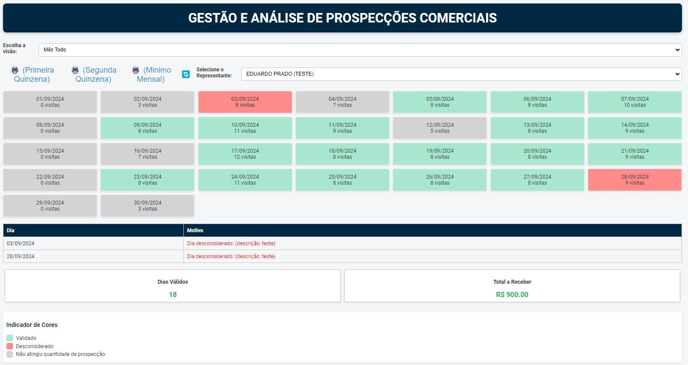 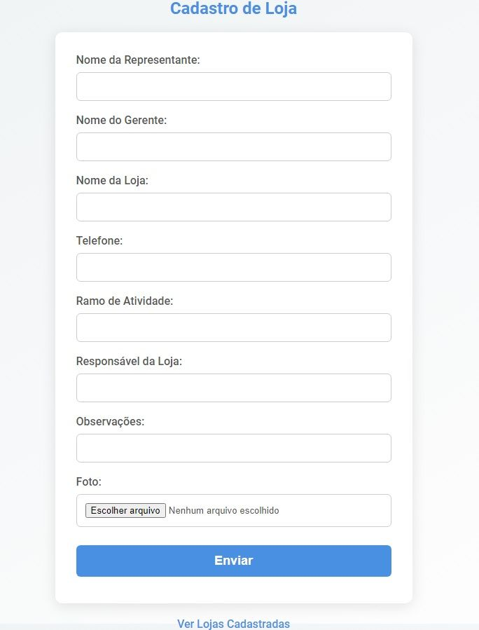